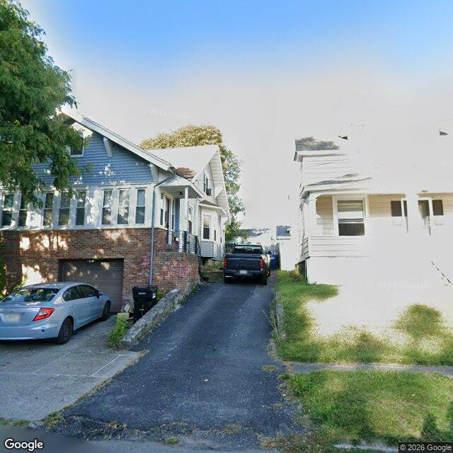

Property entry
156 Hood Ave
Published 2026-10-23T01:03:35+00:00
Parcel key: 005-02-560

City records
Matches use parcel IDs, normalized addresses, or nearby coordinates. Confirm a match against the source record before relying on it. Publication dates are not source-data dates.
Vacant properties 0
No matches stored for this feed. The feed or address matching may be incomplete; this is not confirmation that no records exist.
Rental registry 0
No matches stored for this feed. The feed or address matching may be incomplete; this is not confirmation that no records exist.
Code violations 0
No matches stored for this feed. The feed or address matching may be incomplete; this is not confirmation that no records exist.
Unfit properties 0
No matches stored for this feed. The feed or address matching may be incomplete; this is not confirmation that no records exist.
AI image observations (unverified)
These observations are generated from an image, not an inspection or an official code finding. No human verification is recorded here.
Image capture date: Not recorded. The entry publication date does not establish the age of the image.
Automated image description
{ "summary": "The visible exterior of the property appears to be a multi-level residence with an attached garage, exhibiting some areas of wear on the siding and roof, and some unmanaged vegetation along the driveway and in the yard.", "property_type_guess": "single_family", "visible_conditions": [ "The property features a multi-level structure with light blue siding on the upper sections and a brick lower level, including an attached garage.", "The roof exhibits some visible discoloration or possible organic growth on its surface.", "Sections of the light blue siding appear to show signs of wear, such as possible peeling paint or fading.", "Windows and doors appear to be present and generally intact, though some frames may show minor wear.", "A porch or entry area with railings is visible on the side of the structure.", "The yard area includes a concrete pad and an asphalt driveway, with some areas of unmanaged grass and weeds along the driveway edges and in the foreground.", "A single black trash bin is visible near the garage, consistent with ordinary household items." 侬, "condition_scores": { "roof": "fair", "siding_or_facade": "fair", "windows_doors": "fair", "porch_or_entry": "fair", "yard_or_lot": "fair", "trash_debris": "none_visible", "vegetation_overgrowth": "minor" }, "visible_flags": { "boarded_windows_or_doors": "no", "fire_damage_visible": "no", "structural_damage_visible": "no", "vacancy_signs_visible": "no", "active_construction_visible": "no" }, "possible_unrecorded_issues": [ "Apparent discoloration or possible organic growth on roof shingles.", "Visible wear or possible peeling paint on sections of the light blue siding.", "Areas of unmanaged grass and weeds along the driveway and in the foreground." ], "image_annotations": [ { "label": "Roof discoloration", "reason": "Visible discoloration or possible organic growth on the roof surface.", "bbox": { "x": 0.05, "y": 0.05, "width": 0.50, "height": 0.25 }, "confidence": "high" }, { "label": "Siding wear", "reason": "Sections of light blue siding appear to show signs of wear or possible peeling paint.", "bbox": { "x": 0.05, "y": 0.30, "width": 0.45, "height": 0.20 }, "confidence": "high" }, { "label": "Unmanaged vegetation", "reason": "Areas of unmanaged grass and weeds are visible along the right side of the driveway and in the foreground.", "bbox": { "x": 0.55, "y": 0.65, "width": 0.45, "height": 0.35 }, "confidence": "high" }, { "label": "Unmanaged vegetation", "reason": "Unmanaged growth is visible along the retaining wall on the left side of the driveway.", "bbox": { "x": 0.30, "y": 0.60, "width": 0.20, "height": 0.15 }, "confidence": "high" } ], "needs_human_review": false, "confidence": "high", "caveats": [ "The image provides a street-level view, which may limit the visibility of the entire roof or rear sections of the property.", "The image appears to be from Google Street View, so its age is unknown, and conditions may have changed since it was captured." ] }
Property type guess: unclear
Visible conditions
- No items reported.
Condition scores
No structured condition scores available.
Visible flags
No structured visible flags available.
Possible image-only flags
- No items reported.
AI review boxes
- No items reported.
Review reasons
- No items reported.
Image quality
- Available
- True
- Bytes
- 77912
- Needs Rerun
- False
ACS tract context
Census Tract 4; Onondaga County; New York
- Housing units
- 1534
- Median gross rent
- 130600
- Median household income
- 66250
- Poverty rate
- 27.6
- Renter-occupied share
- 71.7
- Total population
- 4042
- Vacancy rate
- 4.6
OpenStreetMap nearby
meter search radius
OpenStreetMap lookup failed: HTTP Error 406: Not Acceptable